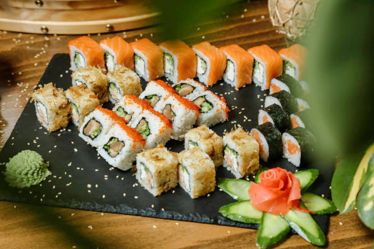
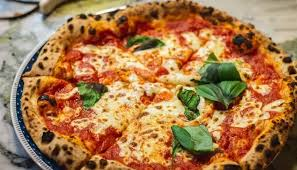

Sushi is a Japanese dish featuring specially prepared rice and usually some type of fish or seafood, often raw, but sometimes cooked. And though you might automatically associate the word sushi with raw fish, it's actually the rice that is the most important ingredient. Indeed, the word "sushi" refers to the sour flavor of the vinegared rice. Regardless of the toppings or fillings, sushi always includes rice. As a matter of fact, sushi rice is so important that sushi chefs in Japan undergo years of training just to learn how to cook the rice properly, before they ever begin to handle any fish or seafood.
Jollof rice is the most popular rice across the Coast of West Africa. Spiced, red-orange it is street food, everyday lunch, Sunday rice, celebration food, and everything in between. The rice grains are stewed and layered with flavor, but emerge at the end of cooking somewhat separate—the goal is more pilau than risotto. Converted or parboiled long grain rice works best because the parboiling process strengthens the grains so they cook in the sauce without breaking down and turning to mush.

pizza, dish of Italian origin consisting of a flattened disk of bread dough topped with some combination of olive oil, oregano, tomato, olives, mozzarella or other cheese, and many other ingredients, baked quickly—usually, in a commercial setting, using a wood-fired oven heated to a very high temperature—and served hot.
